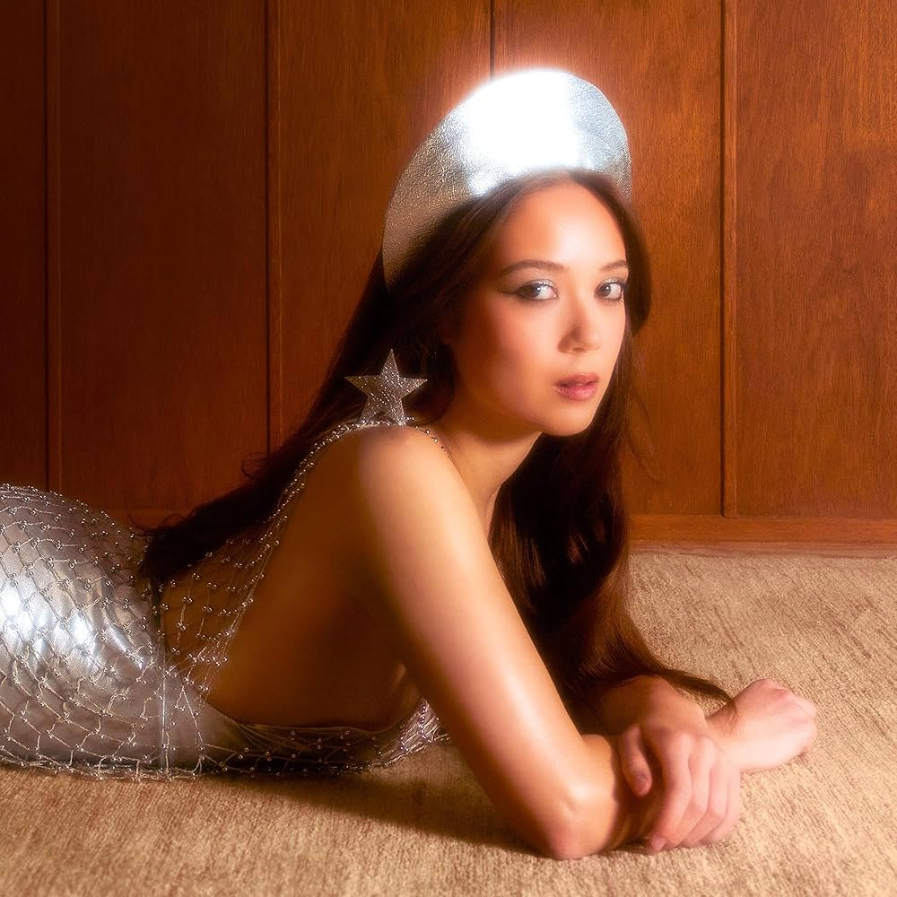
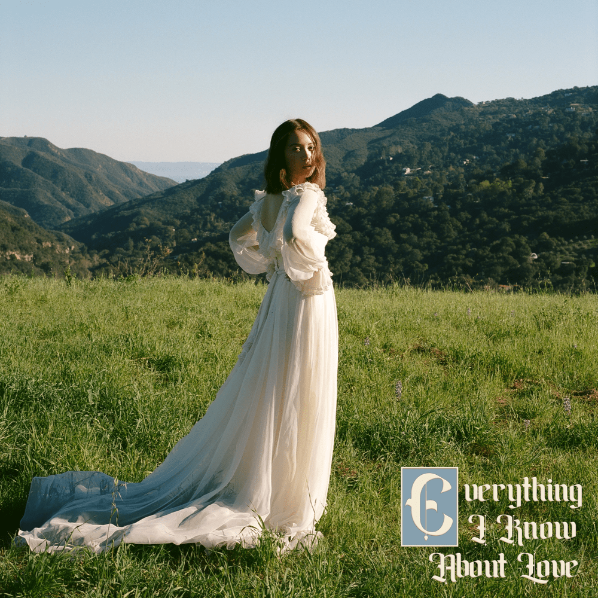

Bibliografía
Laufey Lín Bing Jónsdóttir nació el 23 de abril de 1999 en Reikiavik,
Islandia. Hija de padre islandés y madre de origen chino.
Dese temprana edad, se interesó fuertemente por la música debido a que
su madre es violinista clásica y su abuelo, Lin Yaoji, fue profesor de
violín en el Conservatorio Central de Música de China. Laufey comenzó a
aprender a tocar el piano a la edad de cuatro años, y el violonchelo a
los ocho años. Se graduó en la Facultad de Música de Reykjavík, donde
también estudió canto, en 2018.
A octubre de 2023 está establecida en Los Ángeles, California. Donde se
ha enfocado principalmente en su carrera como cantante y compositora.
Carrera Musical
Laufey lanzó su primer sencillo, "Street by Street", en 2019. En 2020, lanzó su primer EP, "Typical of Me". En 2021, lanzó su segundo EP, "Typical of Me, Pt. 2". En 2022, lanzó su primer álbum de estudio, "Typical of Me".
Influencias y estilo musical
Laufey ha citado a artistas como Norah Jones, Amy Winehouse, Billie Holiday, Frank Sinatra, y Chet Baker como sus principales influencias musicales. Su estilo musical ha sido descrito como jazz, pop, y soul.
DiscografíaÁlbumes de estudio:
Sencillos / Eps:
|



|
Álbum más popular
Everything I Know About Love es el álbum debut de la cantante y compositora islandesa-china Laufey, lanzado en 2022. El álbum fusiona elementos de jazz, pop, y soul, creando un sonido retro y moderno a la vez. Con letras sinceras y nostálgicas, se exploran temas como el amor, la juventud, y la autodescubrimiento. Canciones como "Valentine" y "Falling Behind" destacan por su lirismo poético y la influencia del jazz clásico.